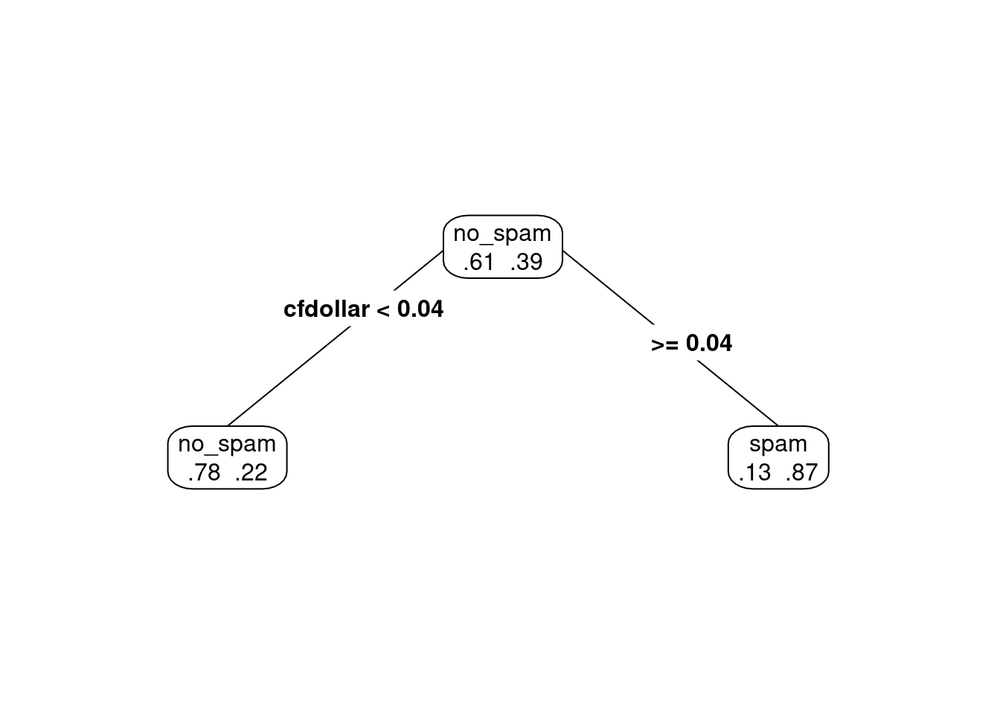
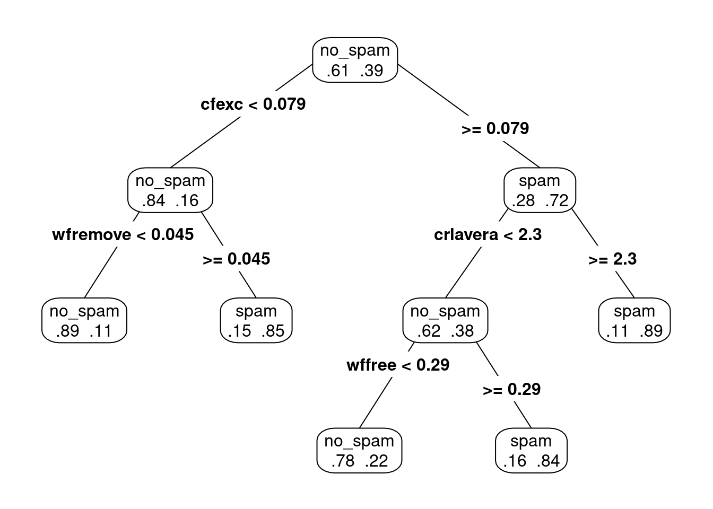
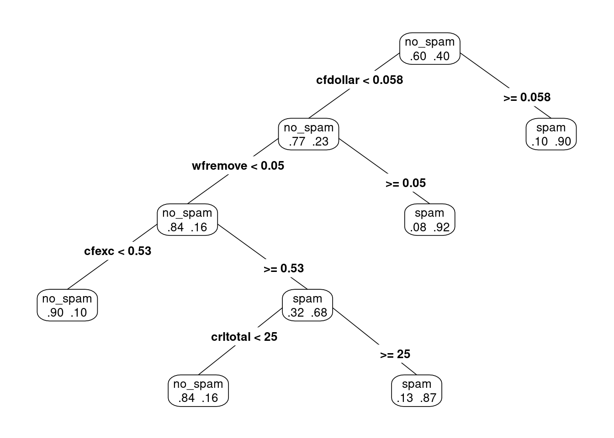
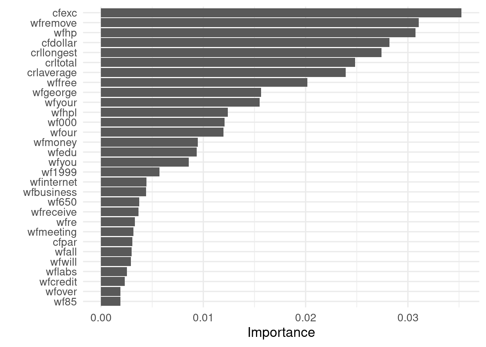
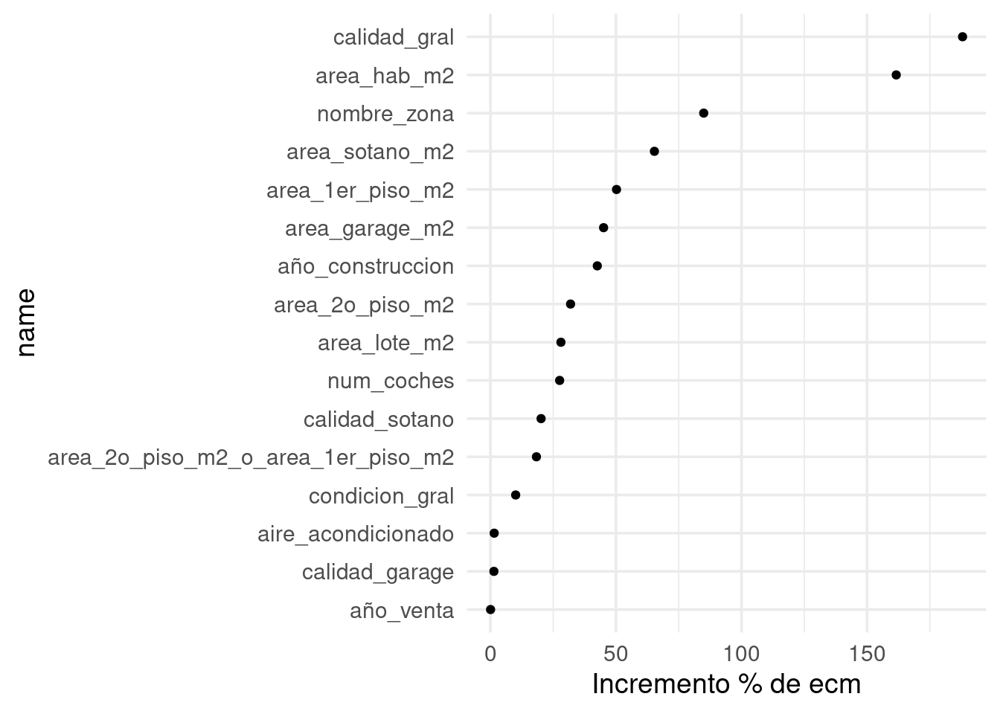

Los métodos basados en árboles son de un distinto tipo a redes neuronales y regresión. En redes neuronales y regresión, los modelos que usamos son paramétricos, en el sentido de que están definidos por un número fijo de parámetros (cuyo número lo definimos con la estructura del modelo e hiperparámetros).
Los árboles y métodos derivados (bosques aleatorios, boosting de árboles) son no-paramétricos: el número de parámetros que los definen dependen del tamaño y forma del conjunto de entrenamiento. Estos métodos tienen menos supuestos acerca de la estructura de las funciones de predicción que podemos ajustar, incluyendo qué interacciones son útiles para hacer predicciones.
Otro método no paramétrico que consideramos anteriormente es k-vecinos más cercanos. Vimos la deficiencias que métodos locales como este pueden tener en dimensión alta. Los métodos basados en árboles, sin embargo, están diseñados para buscar subconjuntos chicos de variables con las que se puedan hacer buenas predicciones, y en consecuencia, para muchos problemas usuales, lidian apropiadamente con el problema de dimensión alta.
12.1 Árboles para regresión y clasificación.
La idea básica de los árboles es buscar puntos de cortes en las variables de entrada para hacer predicciones, ir dividiendo la muestra, y encontrar cortes sucesivos para refinar las predicciones.
Ejemplo
Buscamos clasificar hogares según su ingreso, usando como entradas características de los hogares. Podríamos tener, por ejemplo:
Nótese que los árboles pueden capturar interacciones entre las variables de entradas. En nuestro ejemplo ficticio, “automóvil” nos da información acerca del ingreso, pero solo caundo el nivel de educación del jefe de familia es bajo. (Ejercicio: si el ingreso fuera una cantidad numérica, ¿cómo escribirías este modelo con una suma de términos que involucren las variables mostradas en el diagrama?)
Los árboles también pueden aproximar relaciones no lineales entre entradas y variable de salida (es similar a los ejemplos donde haciamos categorización de variables de entrada).
Igual que en redes neuronales, en lugar de buscar puntos de corte o interacciones a mano, con los árboles intentamos encontrarlos de manera automática.
12.1.1 Árboles para clasificación
Un árbol particiona el espacio de entradas en rectángulos paralelos a los ejes, y hace predicciones basadas en un modelo simple dentro de cada una de esas particiones.
El proceso de partición binaria recursiva (con una entrada a la vez) puede representarse mediante árboles binarios.
Los nodos terminales representan a la partición obtenida.
Para definir el proceso de construcción de los árboles, debemos definir:
¿Cómo escoger las particiones? Idea: buscar hacer los nodos sucesivamente más puros (que una sola clase domine).
¿Cuándo declarar a un nodo como terminal? ¿Cuándo particionar más profundamente? Idea: dependiendo de la aplicación, buscamos hacer árboles chicos, o en otras árboles grandes que después podamos para no sobreajustar.
¿Cómo hacer predicciones en nodos terminales? Idea: escoger la clase más común en cada nodo terminal (la de máxima probabilidad).
12.1.2 Tipos de partición
Supongamos que tenemos variables de entrada \((X_1,\ldots, X_p)\). Recursivamente particionamos cada nodo escogiendo entre particiones tales que:
Dependen de una sola variable de entrada \(X_i\)
Si \(X_i\) es continua, la partición es de la forma \(\{X_i\leq c\},\{X_i> c\}\), para alguna \(c\) (punto de corte)
Si \(X_i\) es categórica, la partición es de la forma \(\{X_i\in S\},\{X_i\notin S\}\), para algún subconjunto \(S\) de categorías de \(X_i\).
En cada nodo candidato, escogemos uno de estos cortes para particionar.
¿Cómo escogemos la partición en cada nodo? En cada nodo, la partición se escoge de una manera miope o local, intentando separar las clases lo mejor que se pueda (sin considerar qué pasa en cortes hechos más adelante). En un nodo dado, escogemos la partición que reduce lo más posible su impureza.
12.1.3 Medidas de impureza
Consideramos un nodo \(t\) de un árbol \(T\), y sean \(p_1(t),\ldots, p_K(t)\) las proporciones de casos de \(t\) que caen en cada categoría.
Nota
La impureza de un nodo \(t\) está dada por \[i(t) = -\sum_{j=1}^K p_j(t)\log p_j(t)\] Este medida se llama entropía. Hay otras posibilidades como medida de impureza (por ejemplo, coeficiente de Gini).
Donde vemos que la máxima impureza se alcanza cuando las proporciones de clase en un nodo son 50-50, y la mínima impureza (máxima pureza) se alcanza cuando en el nodo solo hay casos de una clase. Nótese que esta cantidad es proporcional a la devianza del nodo, donde tenemos porbabilidad constante de clase 1 igual a \(p\).
12.1.4 Reglas de partición y tamaño del árobl
Podemos escribir la regla de partición, que se aplica a cada nodo de un árbol
Regla de partición
En cada nodo, buscamos entre todas las variables \(X_i\) y todos los puntos de corte \(c\) la que da la mayor reducción de impureza posible (donde la impureza de un corte es el promedio ponderado por casos de las impurezas de los nodos resultantes).
Ejemplo
Consideremos un nodo \(t\), cuyos casos de entrenamiento son:
Lo que resta explicar es qué criterio de paro utilizamos para dejar de particionar.
Regla de paro
Cuando usemos árboles en ótros métodos, generalmente hay dos opciones:
Particionar hasta cierta profundidad fija (por ejemplo, máximo 8 nodos terminales). Este enfoque generalmente usa árboles relativamente chicos (se usa en boosting de árboles).
Dejar de particionar cuando encontramos un número mínimo de casos en un nodo (por ejemplo, 5 o 10 casos). Este enfoque resulta en árboles grandes, probablemente sobreajustados (se usa en bosques aleatorios).
Y cuando utilizamos los árboles por sí solos para hacer predicciones:
Podemos probar distintos valores de tamaño de árbol, y escogemos por validación (muestra o cruzada) el tamaño final.
Podemos usar el método CART de Breiman, que consiste en construir un árbol grande y luego podar al tamaño correcto.
Ejemplo
Construímos algunos árboles con los datos de spam:
Warning: There were 2 warnings in `mutate()`.
The first warning was:
ℹ In argument: `across(is_double, round, 2)`.
Caused by warning:
! Use of bare predicate functions was deprecated in tidyselect 1.1.0.
ℹ Please use wrap predicates in `where()` instead.
# Was:
data %>% select(is_double)
# Now:
data %>% select(where(is_double))
ℹ Run `dplyr::last_dplyr_warnings()` to see the 1 remaining warning.
Y notamos la brecha grande entre prueba y entrenamiento, lo que sugiere sobreajuste. Este árbol es demasiado grande.
12.1.5 Costo - Complejidad (Breiman)
Una manera de escoger árboles del tamaño correcto es utilizando una medida inventada por Breiman para medir la calidad de un árbol. La complejidad de un árbol \(T\) está dada por (para \(\alpha\) fija):
\[C_\alpha (T) = \overline{err}(T) + \alpha \vert T\vert\] donde
\(\overline{err}(T)\) es el error de clasificación de \(T\)
\(\vert T\vert\) es el número de nodos terminales del árbol
\(\alpha>0\) es un parámetro de penalización del tamaño del árbol.
Esta medida de complejidad incluye qué tan bien clasifica el árbol en la muestra de entrenamiento, pero penaliza por el tamaño del árbol.
Para escoger el tamaño del árbol correcto, definimos \(T_\alpha \subset T\) como el subárbol de \(T\) que minimiza la medida \(C_\alpha (T_\alpha)\).
Para entender esta decisión, obsérvese que:
Un subárbol grande de \(T\) tiene menor valor de \(\overline{err}(T)\) (pues usa más cortes)
Pero un subárbol grande de \(T\) tiene más penalización por complejidad \(\alpha\vert T\vert\).
De modo que para \(\alpha\) fija, el árbol \(T_\alpha\) hace un balance entre error de entrenamiento y penalización por complejidad.
12.1.5.1 Ejemplo
Podemos ver subárboles más chicos creados durante el procedimiento de división de nodos (prp está el paquete rpart.plot). En este caso pondemos \(\alpha = 0.2\) (cp = \(\alpha\) = complexity parameter):
arbol_chico_1 <-prune(arbol_grande_1$fit, cp =0.2)prp(arbol_chico_1, type =4, extra =4)

Si disminuimos el coeficiente \(\alpha\).
arbol_chico_1 <-prune(arbol_grande_1$fit, cp =0.07)prp(arbol_chico_1, type =4, extra =4)
y vemos que en efecto el árbol \(T_{0.07}\) contiene al árbol \(T_{0.2}\), y ambos son subárboles del árbol gigante que construimos al principio.
Tip
Para podar un árbol con costo-complejidad, encontramos para cada \(\alpha>0\) (coeficiente de complejidad) un árbol \(T_\alpha\subset T\) que minimiza el costo-complejidad. Esto resulta en una sucesión de árboles \(T_0\subset T_1\subset T_2\subset \cdots T_m\subset T\), de donde podemos escoger con validación el árbol óptimo.
Nota: Esto es un teorema que hace falta demostrar: el resultado principal es que conforme aumentamos \(\alpha\), vamos eliminiando ramas del árbol, de manera que los árboles más chicos siempre sin subárboles de los más grandes.
Nota: Enfoques de predicción basados en un solo árbol para clasificación y regresión son típicamente superados en predicción por otros métodos. ¿Cuál crees que sea la razón? ¿Es un problema de varianza o sesgo?
12.1.6 Predicciones con CART
En el método de poda usual y selección de complejidad seleccionamos la complejidad que minimiza el error de clasificación.
# esta es una manera de que la validación cruzada# corra en paralelo.# install.packages("doParallel")# install.packages("doFuture")library(doParallel)library(doFuture)registerDoFuture()cl <-makeCluster(5)plan(cluster, workers = cl)
set.seed(993) # para hacer reproducible la validación cruzadacortes_vc <-vfold_cv(spam_entrena, v =10)# afinamos dos parámetrosspam_arbol <-decision_tree(cost_complexity =tune(), min_n =tune()) |>set_engine("rpart") |>set_mode("classification") spam_receta <-recipe(spam ~ ., spam_entrena)spam_flujo <-workflow() |>add_recipe(spam_receta) |>add_model(spam_arbol) # validación cruzadavalores_grid <-expand_grid(cost_complexity =c(exp(seq(-8, -4, 0.25))),min_n =c(5, 10, 20, 40))evaluacion_vc <-tune_grid(spam_flujo, resamples = cortes_vc,grid = valores_grid)metricas_vc <-collect_metrics(evaluacion_vc)metricas_vc
Para problemas de regresión, el criterio de pureza y la predicción en cada nodo terminal es diferente:
En los nodos terminales usamos el promedio los casos de entrenamiento que caen en tal nodo (en lugar de la clase más común)
La impureza de define como varianza: si \(t\) es un nodo, su impureza está dada por \(\frac{1}{n(t)}\sum (y - m)^2\), donde la suma es sobre los casos que están en el nodo y \(m\) es la media de las \(y\)’s del nodo.
12.1.8 Variabilidad en el proceso de construcción
Existe variabilidad considerable en el proceso de división, lo cual es una debilidad de los árboles. Por ejemplo:
# muestra bootstrapset.seed(91923)muestra_1 <-sample_frac(spam_entrena, 1 , replace =TRUE)spam_1 <-rpart(spam ~ ., data = muestra_1, method ="class")arbol_podado <-prune(spam_1, cp=0.03)prp(arbol_podado, type =4, extra =4)

# muestra bootstrapmuestra_1 <-sample_frac(spam_entrena, 1 , replace =TRUE)spam_1 <-rpart(spam ~ ., data = muestra_1, method ="class")arbol_podado <-prune(spam_1, cp=0.03)prp(arbol_podado, type =4, extra =4)

Pequeñas diferencias en la muestra de entrenamiento produce distintas selecciones de variables y puntos de corte, y estructuras de árboles muchas veces distintas. Esto introduce varianza considerable en las predicciones.
12.1.9 Relaciones lineales
Los árboles pueden requerir ser muy grandes para estimar apropiadamente relaciones lineales.
Árboles chicos son relativamente fáciles de explicar
Capturan interacciones entre las variables de entrada
Son robustos en el sentido de que
valores numéricos atípicos no hacen fallar al método
no es necesario transformar (monótonamente) variables de entrada
hay formas fáciles de lidiar con datos faltantes (cortes sucedáneos)
Se ajustan rápidamente y son relativamente fáciles de interpretar (por ejemplo, son útiles para clasificar en campo)
Árboles grandes generalmente no sufren de sesgo.
Desventajas:
Tienen dificultades en capturar estructuras lineales.
En la interpretación, tienen la dificultad de que muchas veces algunas variables de entrada “enmascaran” a otras. Que una variable de entrada no esté en el árbol no quiere decir que no sea “importante” para predecir (regresión ridge lidia mejor con esto).
Son inestables (varianza alta) por construcción: es local/miope, basada en cortes duros si/no. Esto produce desempeño predictivo relativamente malo. (p ej: una pequeña diferencia en cortes iniciales puede resultar en estructuras de árbol totalmente distintas).
Adicionalmente, no son apropiados cuando hay variables categóricas con muchas niveles: en estos casos, el árbol sobreajusta desde los primeros cortes, y las predicciones son malas.
12.2 Bagging de árboles
Bosques aleatorios es un método de predicción que utiliza familias de árboles para hacer predicciones.
Los árboles grandes tienen la ventaja de tener sesgo bajo, pero sufren de varianza alta. Podemos explotar el sesgo bajo si logramos controlar la varianza. Una idea primera para lograr esto es es hacer bagging de árboles:
Perturbar la muestra de entrenamiento de distintas maneras y producir árboles distintos (grandes). La perturbación más usada es tomar muestras bootstrap de los datos y ajustar un árbol a cada muestra bootstrap
Promediar el resultado de todos estos árboles para hacer predicciones. El proceso de promediar reduce la varianza, sin tener pérdidas en sesgo.
La idea básica de bagging (bootstrap aggregation) es la siguiente:
Consideramos el proceso \({\mathcal L} \to T_{\mathcal L}\), que representa el proceso de ajuste de un árbol \(T_{\mathcal L}\) a partir de la muestra de entrenamiento \({\mathcal L}\). Si pudiéramos obtener distintas muestras de entrenamiento \[{\mathcal L}_1, {\mathcal L}_2, \ldots, {\mathcal L}_B,\] y supongamos que construimos los árboles (que suponemos de regresión) \[T_1, T_2, \ldots, T_B,\] Podríamos mejorar nuestras predicciones construyendo el árbol promedio \[T(x) = \frac{1}{B}\sum_{i=b}^B T_b (x)\] ¿Por qué es mejor este árbol promedio que cualquiera de sus componentes? Veamos primero el sesgo. El valor esperado del árbol promedio es \[E[T(x)] = \frac{1}{B}\sum_{i=b}^B E[T_b (x)]\] y como cada \(T_b(x)\) se construye de la misma manera a partir de \({\mathcal L}_b\), y todas las muestras \({\mathcal L}_b\) se extraen de la misma forma, todos los términos de la suma de la derecha son iguales: \[E[T(x)] = E[T_1 (x)],\] lo que implica que el sesgo del promedio es igual al sesgo de un solo árbol (que es bajo, pues suponemos que los árboles son grandes).
Ahora veamos la varianza. Como las muestras \({\mathcal L}_b\) se extraen de manera independiente, entonces
\[Var[T(x)] = Var\left( \frac{1}{B}\sum_{i=b}^B T_b (x)\right) = \frac{1}{B^2}\sum_{i=b}^B Var[T_b (x)],\] pues los distintos \(T_b(x)\) no están correlacionados (en ese caso, varianza de la suma es la suma de las varianzas), y las constantes salen de la varianza al cuadrado. Por las mismas razones que arriba, todos los términos de la derecha son iguales, y \[Var[T(x)] = \frac{1}{B}\ Var[T_1 (x)]\] de modo que la varianza del árbol promedio es mucho más chica que la varianza de un árbol dado (si \(B\) es grande).
Sin embargo, no podemos tomar muestras de entrenamiento repetidamente para ajustar estos árboles. ¿Cómo podemos simular extraer distintas muestras de entrenamiento?
Nota
Sabemos que si tenemos una muestra de entrenamiento fija \({\mathcal L}\), podemos evaluar la variación de esta muestra tomando muestras bootstrap de \({\mathcal L}\), que denotamos por
Recordatorio: una muestra bootstrap de \(\mathcal L\) es una muestra con con reemplazo de \({\mathcal L}\) del mismo tamaño que \({\mathcal L}\).
Entonces la idea es que construimos los árboles (que suponemos de regresión) \[T_1^*, T_2^*, \ldots, T_B^*,\] podríamos mejorar nuestras predicciones construyendo el árbol promedio \[T^*(x) = \frac{1}{B}\sum_{i=b}^B T_b^* (x)\] para suavizar la variación de cada árbol individual.
El argumento del sesgo aplica en este caso, pero el de la varianza no exactamente, pues las muestras bootstrap no son independientes (están correlacionadas a través de la muestra de entrenamiento de donde se obtuvieron),a pesar de que las muestras bootstrap se extraen de manera independiente de \({\mathcal L}\). De esta forma, no esperamos una reducción de varianza tan grande como en el caso de muestras independientes.
Bagging
Sea \({\mathcal L} =\{(x^{(i)}, y^{(i)})\}_{i=1}^n\) una muestra de entrenamiento, y sean \[{\mathcal L}_1^*, {\mathcal L}_2^*, \ldots, {\mathcal L}_B^*,\] muestras bootstrap de \({\mathcal L}\) (muestreamos con reemplazo los pares\((x^{(i)}, y^{(i)})\), para obtener una muestra de tamaño \(n\)).
Para cada muestra bootstrap construimos un árbol \[{\mathcal L}_b^* \to T_b^*\].
(Regresión) Promediamos árboles para reducir varianza \[T^*(x) = \frac{1}{B}\sum_{i=b}^B T_b^*(x)\]
(Clasificación) Tomamos votos sobre todos los árboles: \[T^*(x) = argmax_g \{ \# \{i|T_b^*(x)=g\}\}.\] Podemos también calcular probabilidades promedio sobre todos los árboles.
Bagging muchas veces reduce el error de predicción gracias a una reducción modesta de varianza.
Nota: No hay garantía de bagging reduzca el error de entrenamiento, especialmente si los árboles base son muy malos clasificadores ¿Puedes pensar en un ejemplo donde empeora?
12.2.1 Ejemplo
Probemos con el ejemplo de spam. Construimos árboles con muestras bootstrap de los datos originales de entrenamiento:
Y vemos que tenemos una mejora inmediata con respecto un sólo árbol grande (tanto un árbol grande como uno podado con costo-complejidad). El único costo es el cómputo adicional para procesar las muestras bootstrap.
Podemos hacerlo automáticamente de las siguiente forma:
¿Cuántas muestras bootstrap? Bagging generalmente funciona mejor cuando tomamos tantas muestras como sea posible - aunque también es un parámetro que se puede afinar.
Bagging por sí solo se usa rara vez. El método más poderoso es bosques aleatorios, donde el proceso básico es bagging de árboles, pero añadimos ruido adicional en la construcción de árboles.
12.2.2 Mejorando bagging
El factor que limita la mejora de desempeño de bagging es que los árboles están correlacionados a través de la muestra de entrenamiento. Como vimos, si los árboles fueran independientes, entonces mejoramos por un factor de \(B\) (número de muestras independientes). Veamos un argumento para entender cómo esa correlación limita las mejoras:
donde cada \(T^*_i\) se construye a partir de una muestra bootstrap de \({\mathcal L}\). Nótese que esta varianza es sobre la muestra de entrenamiento \({\mathcal L}\). Usando la fórmula de la varianza para sumas generales:
\[\sigma^2(x) = Var(T_i^* (x))\] que son todas iguales porque los árboles bootstrap se extraen de la misma manera (\({\mathcal L}\to {\mathcal L}^*\to T^*\)).
Escribimos ahora \[\rho(x) = corr(T_i^* (x), T_j^* (x))\] que es una correlación sobre \({\mathcal L}\) (asegúrate que entiendes este término). Todas estas correlaciones son iguales pues cada par de árboles se construye de la misma forma.
Si \(\rho(x)=0\) (árboles no correlacionados), la varianza del ensemble es la fracción \(1/B\) de la varianza de un solo árbol, y obtenemos una mejora considerable en varianza. En el otro extremo, si la correlación es alta \(\rho(x)\approx 1\), entonces no obtenemos ganancias por promediar árboles y la varianza del ensamble es similar a la de un solo árbol.
Tip
Cuando hacemos bagging de árboles, la limitación de mejora cuando promediamos muchos árboles está dada por la correlación entre ellos: cuanto más grande es la correlación, menor beneficio en reducción de varianza obtenemos.
Si alteramos el proceso para producir árboles menos correlacionados (menor \(\rho(x)\)), podemos mejorar el desempeño de bagging. Sin embargo, estas alteraciones generalmente están acompañadas de incrementos en la varianza (\(\sigma^x(x)\)).
12.3 Bosques aleatorios
Los bosques aleatorios son una versión de árboles de bagging decorrelacionados. Esto se logra introduciendo variabilidad en la construcción de los árboles (esto es paradójico - pero la explicación está arriba: aunque la varianza empeora (de cada árbol), la decorrelación de árboles puede valer la pena).
12.3.1 Sabiduría de las masas
Una explicación simple de este proceso que se cita frecuentemente es el fenómeno de la sabiduría de las masas: cuando promediamos estimaciones pobres de un gran número de personas (digamos ignorantes), obtenemos mejores estimaciones que cualquiera de las componentes individuales, o incluso mejores que estimaciones de expertos. Supongamos por ejemplo que \(G_1,G_2,\ldots, G_M\) son clasificadores débiles, por ejemplo \[P(correcto) = P(G_i=G)=0.6\] para un problema con probabilidad base \(P(G=1)=0.5\). Supongamos que los predictores son independientes, y sea \(G^*\) el clasificador que se construye por mayoría de votos a partir de \(G_1,G_2,\ldots, G_M\), es decir \(G^*=1\) si y sólo si \(\#\{ G_i = 1\} > M/2\).
Podemos ver que el número de aciertos (X) de \(G_1,G_2,\ldots, G_M\), por independencia, es binomial \(Bin(M, 0.6)\). Si \(M\) es grande, podemos aproximar esta distribución con una normal con media \(M*0.6\) y varianza \(0.6*0.4*M\). Esto implica que
Y ahora observamos que cuando \(M\) es grande, la cantidad de la derecha tiende a 1: la masa, en promedio, tiene la razón!
Nótese, sin embargo, que baja dependencia entre las “opiniones” es parte crucial del argumento, es decir, las opiniones deben estar decorrelacionadas.
El proceso de decorrelación de bosques aleatorios consiste en que cada vez que tengamos que hacer un corte en un árbol de bagging, escoger al azar un número de variables y usar estas para buscar la mejor variable y el mejor punto de corte, como hicimos en la construcción de árboles.
Bosques aleatorios
Sea \(m\) fija. Sea \({\mathcal L} =\{(x^{(i)}, y^{(i)})\}_{i=1}^n\) una muestra de entrenamiento, y sean \[{\mathcal L}_1^*, {\mathcal L}_2^*, \ldots, {\mathcal L}_B^*,\] muestras bootstrap de \({\mathcal L}\) (muestreamos con reemplazo los pares\((x^{(i)}, y^{(i)})\), para obtener una muestra de tamaño \(n\)).
Para cada muestra bootstrap construimos un árbol \[{\mathcal L}_b^* \to T_b^*\] de la siguiente forma:
En cada nodo candidato a particionar, escogemos al azar \(m\) variables de las disponibles
Buscamos la mejor variable y punto de corte (como en un árbol normal) pero solo entre las variables que seleccionamos al azar.
Seguimos hasta construir un árbol grande.
(Regresión) Promediamos árboles para reducir varianza \[T^*(x) = \frac{1}{B}\sum_{i=b}^B T_b^*(x)\]
(Clasificación) Tomamos votos sobre todos los árboles: \[T^*(x) = argmax_g \{ \# \{i|T_b^*(x)=g\}\}.\] Podemos también calcular probabilidades promediando sobre todos los árboles las proporciones de clase de cada árbol.
Bosques aleatorios muchas veces reduce el error de predicción gracias a una reducción a veces considerable de varianza. El objetivo final es reducir la varianza alta que producen árboles normales debido a la forma tan agresiva de construir sus cortes.
Observaciones:
El número de variables \(m\) que se seleccionan en cada nodo es un parámetro que hay que escoger (usando validación, validación cruzada).
Ojo: no se selecciona un conjunto de \(m\) variables para cada árbol. En la construcción de cada árbol, en cada nodo se seleccionan \(m\) variables como candidatas para cortes.
Como inducimos aleatoriedad en la construcción de árboles, este proceso reduce la correlación entre árboles del bosque, aunque también incrementa su varianza. Los bosques aleatorios funcionan bien cuando la mejora en correlación es más grande que la pérdida en varianza.
Reducir \(m\), a grandes rasgos:
Aumenta el sesgo del bosque (pues es más restringido el proceso de construcción)
Disminuye la correlación entre árboles y aumenta la varianza de cada árbol
Incrementar \(m\)
Disminuye el sesgo del bosque (menos restricción)
Aumenta la correlacción entre árobles y disminuye la varianza de cada árbol
Cuando usamos bosques aleatorios para estimar probabilidades de clase, como siempre, es necesario checar la calibración de esas probabilidades (ver sección de regresión logística).
Ejemplo
Regresamos a nuestro ejemplo de spam. Intentemos con 500 árboles, y 6 variables (de 58 variables) para escoger como candidatos en cada corte:
Los bosques aleatorios, por su proceso de construcción, tienen aspectos interesantes.
En primer lugar, tenemos la estimación de error de prueba Out-of-Bag (OOB), que es una estimación honesta del error de predicción basada en el proceso de bagging. Es similar a la estimación de validación cruzada (leave-one-out), pero aprovechamos el proceso para hacer un cálculo más simple y rápido.
Obsérvese en primer lugar, que cuando tomamos muestras con reemplazo para construir cada árbol, algunos casos de entrenamiento aparecen más de una vez, y otros casos no se usan en la construcción del árbol. La idea es entonces es usar esos casos excluidos para hacer una estimación honesta del error.
Ejemplo
Si tenemos una muestra de entrenamiento
entrena <-tibble(x =1:10, y =rnorm(10, 1:10, 5))entrena
Esta es la estimación OOB (out-of-bag) para este modelo particular.
En un principio podemos pensar que quizá por mala suerte obtenemos pocos elementos OOB para evaluar el error, pero en realidad para muestras no tan chicas obtenemos una fracción considerable.
Tip
Cuando el tamaño de muestra \(n\) es grande, el porcentaje esperado de casos que no están en la muestra bootstrap es alrededor del 37%
Demuestra usando probabilidad y teoría de muestras con reemplazo.
Estimación OOB del error
Consideramos un bosque aleatorio \(T_{ba}\)con árboles \(T_1^*, T_2^*, \ldots, T_B^*\), y conjunto de entrenamiento original \({\mathcal L} =\{(x^{(i)}, y^{(i)}\}_{i=1}^n\). Para cada caso de entrenamiento \((x^{(i)}, y^{(i)})\) consideramos todos los árboles que no usaron este caso para construirse, y construimos un bosque \(T_{ba}^{(i)}\) basado solamente en esos árboles. La predicción OOB de \(T_{ba}^{(i)}\) para \((x^{(i)}, y^{(i)})\) es \[y_{oob}^{(i)} = T_{ba}^{(i)}(x^{(i)})\] El error OOB del árbol \(T_{ba}\) está dado por 1. Regresión (error cuadrático medio) \[\hat{Err}_{oob} = \frac{1}{n} \sum_{i=1}^n (y^{(i)} - y_{oob}^{(i)})^2\] 2. Clasificación (error de clasificación) \[\hat{Err}_{oob} = \frac{1}{n}\sum_{i=1}^n I(y^{(i)} = y_{oob}^{(i)})\]
La estimación OOB del error es conceptualmente similar a la de validación cruzada.
Observaciones
Para cada dato de entrenamiento, hacemos predicciones usando solamente los árboles que no consideraron ese dato en su construcción. Estas predicciones son las que evaluamos
Es una especie de validación cruzada (se puede demostrar que es similar a validacion cruzada leave-one-out), pero es barata en términos computacionales.
Como discutimos en validación cruzada, esto hace de OOB una buena medida de error para afinar los parámetros del modelo (principalmente el número \(m\) de variables que se escogen en cada corte).
Ejempo
Para el ejemplo de spam, podemos ver el error OOB:
bosque
parsnip model object
Ranger result
Call:
ranger::ranger(x = maybe_data_frame(x), y = y, mtry = min_cols(~6, x), num.trees = ~1000, importance = ~"permutation", num.threads = 1, verbose = FALSE, seed = sample.int(10^5, 1), probability = TRUE)
Type: Probability estimation
Number of trees: 1000
Sample size: 3067
Number of independent variables: 58
Mtry: 6
Target node size: 10
Variable importance mode: permutation
Splitrule: gini
OOB prediction error (Brier s.): 0.04416379
Que comparamos con el score de brier y devianza de prueba:
y vemos que nuestro modelo no tiene una calibración no muy buena: las probabilidades obtenidas del bosque están algo encogidas hacia el centro: son algo “subconfiadas”.
Podemos intentar un bosque con distintos parámetros: específicamente número mínimo de casos por nodo terminal, y distinto número de mtry.
Podemos calibrar las probabilidades de este modelo usando regresión isotónica o regresión logística con splines no decrecientes.
Vamos a ver la segunda técnica. En primer lugar, tendremos que separar nuestra de muestra de prueba en dos partes: una de calibración, y otra de evaluación:
Una desventaja de esta técnica es que tenemos que separar conjuntos de calibración y evaluación.
Para el caso multiclase, se puede probar el siguiente procedimiento: calibrar cada una de las clases, y después normalizar las probabilidades obtenidas. Este procedimiento se puede iterar.
12.5 Intervalos y su calibración para bosques
Construir intervalos de predicción es considerablemente más complicado que construir predicciones puntuales. Cuando esto es necesario, podemos hacer regresión cuantílica usando bosques.
En árboles de regresión usuales, cuando queremos hacer predicciones para \(x\), aplicamos cada árbol a \(x\), obtenemos los datos del nodo terminal donde cae, y calculamos el promedio de esas observaciones.. Esta es una estimación del valor esperado de la respuesta condicional a las covariables.
En árboles de regresión cuantílica, repetimos el mismo proceso, pero en lugar de calcular la media, calculamos el cuantil deseado.
Como en cualquier método, es necesario verificar que los intervalos producidos por estos métodos tienen cobertura apropiada.
12.5.0.1 Ejemplo:
Consideramos el problema de predicción de precio normal de venta de casas. Los hiperparámetros del modelo pueden ser escogidos previamente mediante validación cruzada o una muestra de validación:
#|include: falseinstall.packages("rfinterval")
Installing package into '/usr/local/lib/R/site-library'
(as 'lib' is unspecified)
Usando muestras bootstrap y error OOB, es posible tener mediciones útiles de la importancia de una variable en el modelo en un bosque aleatorio (todo esto también fue inventado por Breiman).
En primer lugar, definir qué significa que una variable sea importante en un determinado problema no es trivial. El primer punto que consideramos es que intentaremos medir la importancia desde el punto de vista de un modelo: es decir, queremos saber qué tanto “influye” cada variable en las predicciones y su calidad.
Algunos primeros enfoques son (sólo discutiremos los primeros dos aquí):
Si quitamos una variable, construimos un nuevo modelo, y el error de predicción se degrada, la variable es importante.
Una variable es importante cuando las predicciones del modelo se degradan cuando quitamos información de esta variable, o introducimos ruido en esa variable.
Si las predicciones cambian mucho cuando una variable cambia, entonces la variable es importante.
El primer enfoque no se refiere específicamente al modelo dado. Tiene el defecto de que una variable puede tener información predictiva, que el modelo utiliza, y sin embargo, si quitamos la variable y ajustamos un nuevo modelo, otras variables podrían encargarse del trabajo que estaba haciendo en nuestro modelo original: por ejemplo, con variables correlacionadas.
Para evaluar un modelo dado, el segundo enfoque es mejor y se puede intentar de varias maneras. Para modelos basados en árboles, por ejemplo, podríamos ver qué pasa con las predicciones, por ejemplo, cuando cada vez que vemos la variable \(x\) en un nodo escogemos una de las ramas al azar, en lugar de utilizar el valor real de \(x\).
Una manera de implementar esto es el siguiente:
Tenemos un conjunto de datos (incluyendo la respuesta) con el que queremos evaluar la importancia de la variable \(x\).
Ponemos los datos en el árbol, vemos sus predicciones, y evaluamos el error de predicción.
Ahora permutamos al azar la variable \(x\) a lo largo de los casos. Ponemos los datos en el árbol, vemos sus predicciones, y evaluamos el error de predicción nuevamente.
El incremento en error de predicción del caso 2 al caso 3 es una medida de la importancia de la variable \(x\).
Podemos repetir este proceso con distintas permutaciones para construir intervalos o errores estándar que nos ayude a interpretar la variabilidad producida por las permutaciones seleccionadas.
Veremos ejemplos de este procedimiento más adelante. Por el momento, utilizaremos la implementación clásica para bosques aleatorios, aprovechando los datos OOB. La idea de Breiman original de Breiman es como sigue:
Consideramos un árbol \(T^*_j\) del bosque, con muestra bootstrap \({\mathcal L}^*_i\). Calculamos un tipo de error out-of-bag para el árbol, promediando sobre todos los elementos de \({\mathcal L}\) que no están en \({\mathcal L}^*_i\)
\[\widehat{Err}_{oob}(T^*_j) = \frac{1}{A_j}\sum_{(x^{(i)}, y^{(i)}) \in {\mathcal L} -{\mathcal L}^*_i} L(y^{(i)}, T^*_j(x^{(i)}))\] donde \(A_j\) es el tamaño de \({\mathcal L} -{\mathcal L}^*_i\).
Ahora permutamos al azar la variable \(X_k\) en la muestra OOB \({\mathcal L} -{\mathcal L}^*_i\). Describimos esta operación como \(x^{(i)} \to x^{(i)}_k\). Calculamos el error nuevamente:
\[\widehat{Err}_{k}(T^*_j) = \frac{1}{A_j}\sum_{(x^{(i)}, y^{(i)}) \in {\mathcal L} -{\mathcal L}^*_i} L(y^{(i)}, T^*_j(x_k^{(i)}))\] Ahora calculamos la degradación del error out-of-bag debido a la permutación: \[ D_k(T_j^*) = \widehat{Err}_{k}(T^*_j) - \widehat{Err}_{oob}(T^*_j) \]
Y promediamos sobre el bosque entero \[I_k =\frac{1}{B} \sum_{j=1}^B D_k(T^*_j)\] y a esta cantidad le llamamos la importancia (basada en permutaciones) de la variable \(k\) en el bosque aleatorio. Es el decremento promedio de capacidad predictiva cuando “quitamos” la variable \(X_k\).
Observaciones
No podemos “quitar” la variable durante el entrenamiento de los árboles, pues entonces otras variables pueden hacer su trabajo, subestimando su importancia.
No podemos “quitar” la variable al medir el error OOB, pues se necesitan todas las variables para poder clasificar con cada árbol (pues cada árbol usa esa variable, o tiene probabilidad de usarla).
Pero podemos permutar a la hora calcular el error OOB (y no durante el entrenamiento), rompiendo la relación que hay entre \(X_k\) y la variable respuesta.
Aunque este método lo podemos aplicar para cualquier modelo, la interpretación es más interesante con ensembles como bosques aleatorios, pues en cada corte damos oportunidad a distintas variables de entrar en el modelo. Para un sólo arbol es menos útil, por el problema del “enmascaramiento”.
Otra manera de medir importancia para árboles de regresión y clasificación es mediante el decremento de impureza promedio sobre el bosque, para cada variable.
Cada vez que una variable aporta un corte en un árbol, la impureza del árbol disminuye.
Sumamos, en cada árbol, todos estos decrementos de impureza (cada vez que aparece la variable en un corte)
Finalmente, promediamos esta medida de importancia dentro de cada árbol sobre el bosque completo.
Repetimos para cada variable.
Para árboles de clasificación, usualmente se toma la importancia de Gini, que está basada in la impureza de Gini en lugar de la entropía. La impureza de Gini está dada por \[I_G(p_1, \ldots, p_K) = \sum_{k=1}^K p_k(1-p_k),\] que es similar a la impureza de entropía que discutimos en la construcción de árboles: \[I_G(p_1, \ldots, p_K) = \sum_{k=1}^K -p_k\log (p_k),\] Nótese por ejemplo que ambas toman su valor máximo en \(p_k=1/K\) (distribución más uniforme posible sobre las clases), y que son iguales a cero cuando \(p_k=1\) para alguna \(k\).
Ejemplo
En nuestro ejemplo de spam
library(vip)bosque |>vip(num_features =30)

Ejemplo
En el ejemplo de casas:
source("../R/casas_traducir_geo.R")
Rows: 1460 Columns: 81
── Column specification ────────────────────────────────────────────────────────
Delimiter: ","
chr (43): MSZoning, Street, Alley, LotShape, LandContour, Utilities, LotConf...
dbl (38): Id, MSSubClass, LotFrontage, LotArea, OverallQual, OverallCond, Ye...
ℹ Use `spec()` to retrieve the full column specification for this data.
ℹ Specify the column types or set `show_col_types = FALSE` to quiet this message.
Rows: 27 Columns: 3
── Column specification ────────────────────────────────────────────────────────
Delimiter: ","
chr (1): Neighborhood
dbl (2): lat, long
ℹ Use `spec()` to retrieve the full column specification for this data.
ℹ Specify the column types or set `show_col_types = FALSE` to quiet this message.
modelo_bosque <-rand_forest(mtry =5, trees =2000) |>set_engine("ranger", importance ="permutation") |>set_mode("regression") |># usar el default "order" es más rápido, pero # para baja cardinalidad se puede usar "partition"set_args(respect.unordered.factors ="order") flujo_bosque <-workflow() |>add_model(modelo_bosque) |>add_recipe(receta_casas)bosque_ajustado <-fit(flujo_bosque, casas_entrena) |>extract_fit_engine()
importancias_casas_tbl <- ranger::importance(bosque_ajustado) |>enframe() |>mutate(name =fct_reorder(name, value)) |>mutate(valor_porc =100* value / bosque_ajustado$prediction.error)ggplot(importancias_casas_tbl, aes(x = name, y = valor_porc)) +geom_point() +coord_flip() +ylab("Incremento % de ecm")

Observaciones:
Este análisis nos da una idea de cómo funciona el bosque construido y cómo depende de variables individuales.
Puede adaptarse a cualquier método de predicción. Un equivalente sería hacerlo con las predicciones de validación cruzada o con datos de validación, en lugar de usar los datos OOB.
Sin embargo, cuando se usa como método de selección de variables hay que tener algunos cuidados:
Cuando tenemos conjuntos de variables correlacionadas, estas medidas tienden a diluir su importancia entre ellas.
Variables de cardinalidad alta tienden a tener importancias más altas (especialmente cuando se usa la importancia de Gini (impureza)).
Algunas variables con importancia alta puede depender de interacciones con otras variables quizá menos importantes.
12.6.1 Ajustando árboles aleatorios.
El parámetro más importante de afinar es usualmente \(m\), el número de variables que se escogen al azar en cada nodo.
A veces podemos obtener algunas ventajas de afinar el número mínimo de observaciones por nodo terminal y/o el número mínimo de observaciones por nodo para considerar hacer cortes adicionales
Usualmente corremos tantos árboles como podamos (cientos, miles), o hasta que se estabiliza el error. Aumentar más arboles rara vez producen sobreajuste adicional (aunque esto no quiere decir que los bosques aleatorios no puedan sobreajustar)
Implementaciones: hay distintas implementaciones con diferencias considerables. En nuestros ejemplos usamos el paquete ranger. En esta implementación, por ejemplo, las variables cualitativas se toman como ordenadas (alfabético si no es un factor, en el orden de los factores o, ordenadas según la variable respuesta si se usa la opción respect.unordered.factors = TRUE), ver documentación y referencias asociadas. Se puede usar esta última opción y el bosque resultante no necesariamente agrupa niveles de la variable.
12.6.2 Ventajas y desventajas de bosques aleatorios
Ventajas:
Entre los métodos estándar, es en general uno de los métodos más competitivos: usualmente tienen tasas muy buenas de error de predicción.
Los bosques aleatorios son relativamente fáciles de entrenar (ajustar usualmente 1 o 2 parámetros) y rápidos de ajustar.
Heredan las ventajas de los árboles: no hay necesidad de transformar variables o construir interacciones (pues los árboles pueden descubrirlas en parte), son robustos a valores atípicos en las variables de entrada.
Igual que con los árboles, las predicciones de los bosques siempre están en el rango de las variables de predicción (no extrapolan)
Desventajas:
Pueden ser lentos en la predicción, pues muchas veces requieren evaluar grandes cantidades de árboles.
No es tan simple adaptarlos a distintos tipos de problemas (por ejemplo, como redes neuronales, que combinando capas podemos construir modelos ad-hoc a problemas particulares).
La falta de extrapolación puede ser también un defecto (por ejemplo, cuando una estructura lineal aproximada es apropiadas).